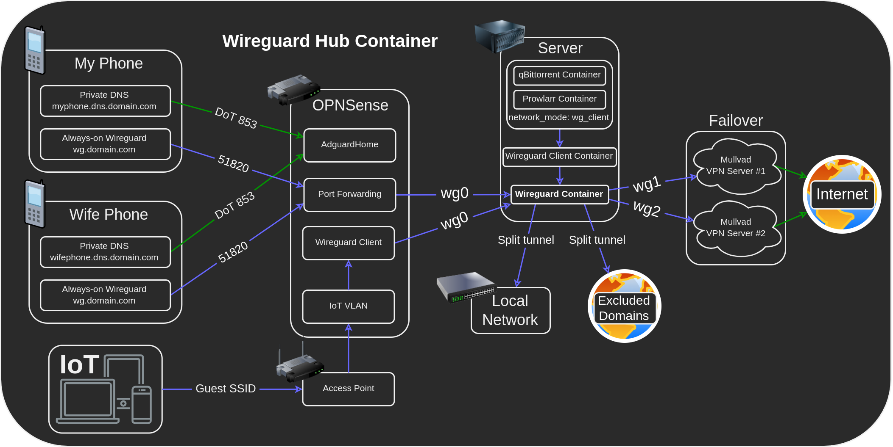
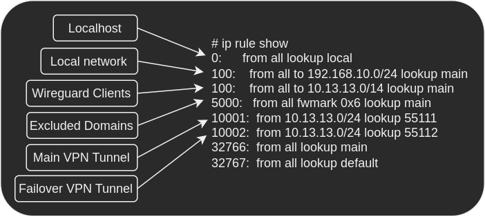

Wireguard Hub

Linuxserver's Wireguard container is extremely versatile, in this example we'll use it as a server that tunnels clients through multiple redundant vpn connections while maintaining access to the LAN.
VPN providers have a limit on the amount of devices, this setup will allow you to have an unlimited amount of devices tunneled through a single VPN connection while also supporting a failover backup connection!
Objectives:
- Implement in a single wireguard server container.
- Allow unlimited clients to connect to the wireguard server container and utilize the same VPN connection.
- Support a fallback VPN connection for increased reliability.
- Support accessing LAN devices over wireguard.
- Support excluding domains that block VPNs.
- Support tunneling other containers through the same VPN connection.
- Support tunneling entire VLANs and hosts through the same VPN connection.
Instructions
Clone the following boilerplate:
git clone https://github.com/quietsy/wireguard-hub.git
Server Template
Replace CHANGETHIS with your LAN subnet under wireguard/templates/server.conf.
Client Tunnels
- Obtain 2 wireguard vpn configurations from your vpn provider (mullvad and torguard have been tested).
- Replace
CHANGETHISwith your vpn configurations under:wireguard/wg_confs/wg1.confwireguard/wg_confs/wg2.conf
Wireguard Server Container
Configure a Wireguard server container according to the Wireguard documentation with the wireguard folder of the boilerplate mounted to /config.
services:
wireguard:
image: lscr.io/linuxserver/wireguard:latest
container_name: wireguard
cap_add:
- NET_ADMIN
environment:
- PUID=1000
- PGID=1000
- TZ=Etc/UTC
- SERVERURL=wireguard.domain.com
- SERVERPORT=51820
- PEERS=1
- PEERDNS=auto
- INTERNAL_SUBNET=10.13.13.0
- ALLOWEDIPS=0.0.0.0/0
- LOG_CONFS=true
- DOCKER_MODS=linuxserver/mods:universal-package-install
- INSTALL_PACKAGES=ipset
volumes:
- ./wireguard:/config
ports:
- 51820:51820/udp
sysctls:
- net.ipv4.conf.all.src_valid_mark=1
restart: unless-stopped
Create the container and perform the following checks to verify that the VPN tunnels works:
- Check that
docker logs wireguardcontains no errors, and check that the server is working properly by connecting a client to it. - Check that you have connectivity on wg1 by running
docker exec wireguard ping -c4 -I wg1 1.1.1.1. - Check that you have connectivity on wg2 by running
docker exec wireguard ping -c4 -I wg2 1.1.1.1. - Check the details of your VPN tunnel on wg1 by running
docker exec wireguard curl --interface wg1 -s https://am.i.mullvad.net/json, you should get an IP that is different from your WAN IP. - Check the details of your VPN tunnel on wg2 by running
docker exec wireguard curl --interface wg2 -s https://am.i.mullvad.net/json, you should get an IP that is different from your WAN IP. - Connect to the tunnel with a client device and navigate to
https://am.i.mullvad.net/json, verify that the server is working properly and that you're tunneled through one the VPN tunnels.
Bypassing the VPN for specific sites (optional)
Manual
Add domains that would bypass the VPN to wireguard/unblock/domains.txt.
Web-UI
There's a basic web-ui for adding sites to the file under wireguard/unblock/index.php.
You can host it on SWAG by adding the following mounts to SWAG's compose:
volumes:
- ./wireguard/unblock:/config/unblock
- ./wireguard/unblock/unblock.subdomain.conf:/config/nginx/proxy-confs/unblock.subdomain.conf:ro
Recreate SWAG and navigate to https://unblock.domain.com, test that it adds domains to wireguard/unblock/domains.txt.
Routing other containers through the tunnel (optional)
Other containers can be routed through the hub by adding another wireguard container in client mode.
Wireguard Client Container
- Add a new peer to the wireguard server container using the
PEERSenvironment variable, and recreate it. - Create another wireguard container, this time in client mode, according to the VPN Route guide.
- Copy the peer's
./wireguard/peer#/peer#.conffrom the server to the client's./wgclient/wg_confs/wg0.conf. - Set the
Endpointto be the server container:Endpoint = wireguard:51820. - Add
PostUpandPreDownrules according to the VPN Route guide. - Create the container for changes to take effect.
Port forwarding (optional)
- Uncomment the port forwarding
PostUpandPreDownrules inwg1.confandwg2.conf. - Replace
10.13.13.2with the wireguard client peer IP. - Replace
45678with the port of the app. - Replace
12345with the port you got from the vpn provider for each tunnel. - Duplicate the rules for udp if needed.
- Restart the container for changes to take effect.
Routing on OPNSense (optional)
VLANs and hosts can be routed through the hub via OPNSense.
- Add a new peer to the wireguard server container using the
PEERSenvironment variable, and recreate it. - Follow https://docs.opnsense.org/manual/how-tos/wireguard-selective-routing.html.
Step 1:
- Set
Public Keyto the server's public key from./wireguard/server/publickey-server. - Set
Allowed IPsto0.0.0.0/0. - Set
Endpoint Addressto the server's LAN IP. - Set
Endpoint Portto51820. - Set
Keepaliveto25.
Step 2:
- Set
Public Keyto the peer's public key from./wireguard/peer#/publickey-peer#. - Set
Private Keyto the peer's public key from./wireguard/peer#/privatekey-peer#. - Set
Listen Portto51820. - Set
Tunnel Addressto the peer's address as listed under[interface]in./wireguard/peer#/peer#.conf. - Select your peer under
Peers. - Check
Disable Routes. - Set
Gatewayto10.13.13.200.
Follow the rest of the guide.
Traffic Overview

The order of traffic is as follows:
- Localhost - traffic to the container.
- Local network - traffic the DNS and gateway.
- Wireguard clients - traffic to the wireguard clients.
- Excluded domains - bypasses the VPN and routes directly.
- Main VPN tunnel - the VPN tunnel in
wg1.conf. - Failover VPN tunnel - the VPN tunnel in
wg2.conf.